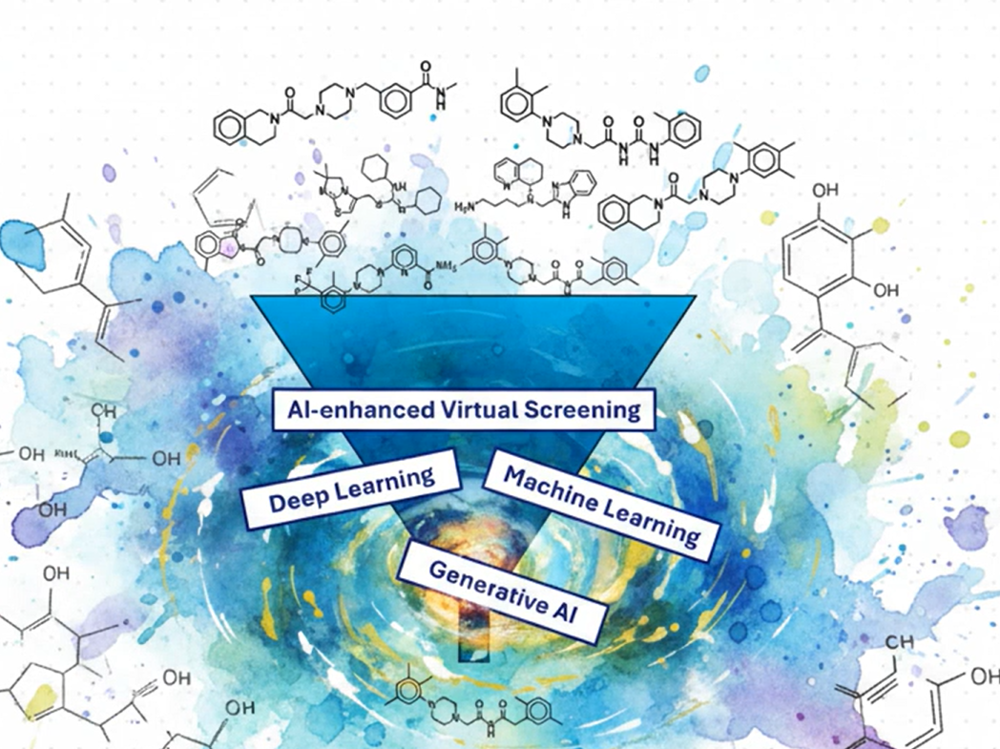
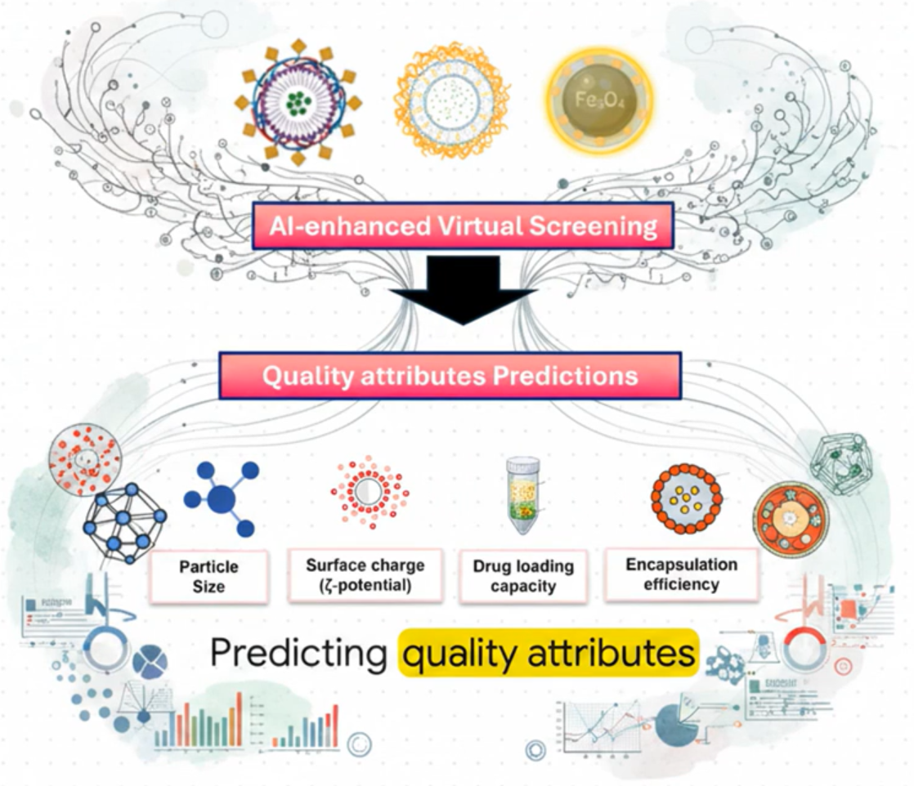

Our workflow connects AI-guided discovery, computational developability assessment, and translational decision-making into a single, unified platform.
Transforming millions of compounds into a decision-ready shortlist.
Our discovery engine combines computational chemistry with modern machine learning to evaluate vast chemical spaces, efficiently, accurately, and reproducibly.

Formulation thinking, integrated from day one.
Most discovery platforms hand off "hits" with no consideration for downstream development. We embed formulation feasibilty directly into the discovery process dramatically reducing late-stage attrition.
